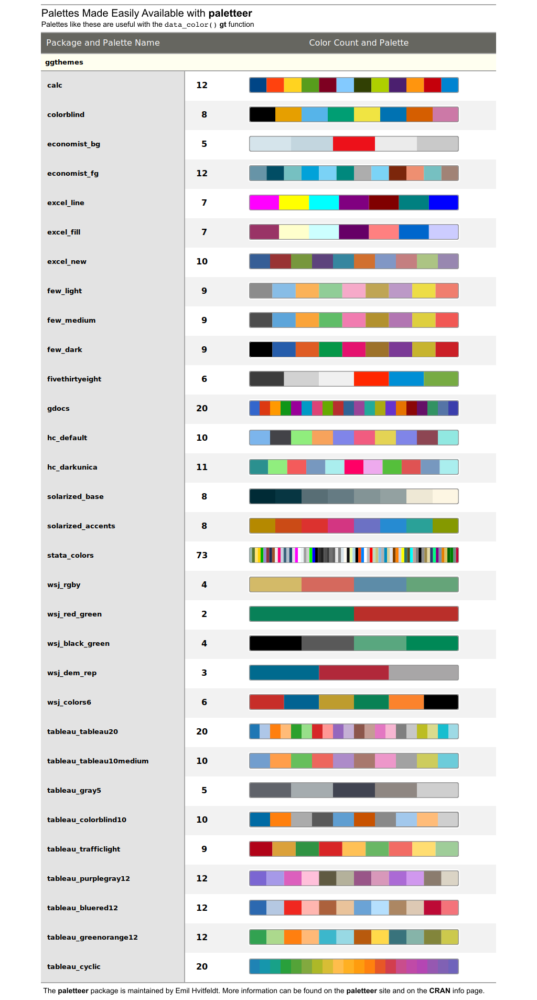

| info_paletteer {gt} | R Documentation |
While the data_color() function allows us to flexibly color
data cells in our gt table, the harder part of this process is
discovering and choosing color palettes that are suitable for the table
output. We can make this process much easier in two ways: (1) by using the
paletteer package, which makes a wide range of palettes from various R
packages readily available, and (2) calling the info_paletteer()
function to give us an information table that serves as quick reference for
all of the discrete color palettes available in paletteer.
info_paletteer(color_pkgs = NULL)
color_pkgs |
a vector of color packages that determines which sets of
palettes should be displayed in the information table. If this is
|
The palettes displayed are organized by package and by palette name. These
values are required when obtaining a palette (as a vector of hexadecimal
colors), from the the paletteer::paletteer_d() function. Once we are
familiar with the names of the color palette packages (e.g.,
RColorBrewer, ggthemes, wesanderson), we can narrow down
the content of this information table by supplying a vector package names to
color_pkgs.

Other information functions: info_currencies,
info_date_style,
info_time_style
# Get a table of info on just the
# `ggthemes` color palette (easily
# accessible from the paletteer pkg)
tab_1 <-
info_paletteer(
color_pkgs = "ggthemes")